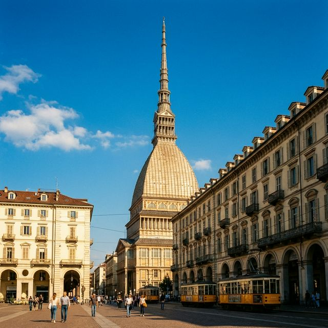
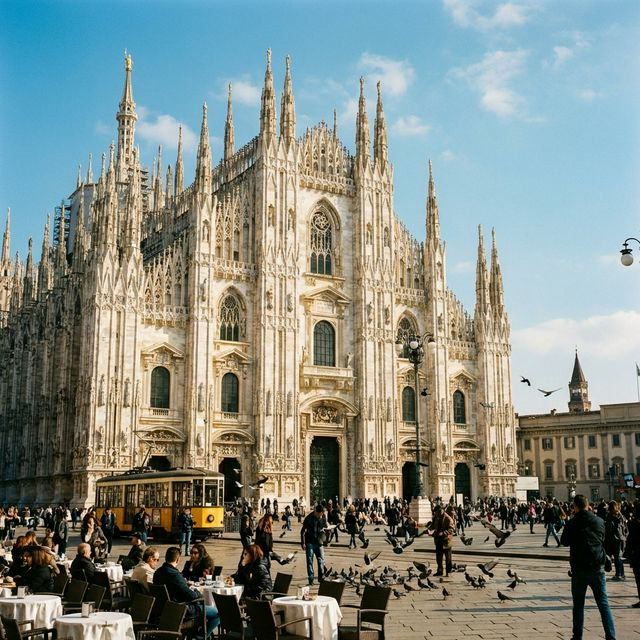

5 城不走回頭路，動線最輕鬆。鎖定 Grand Hotel Victoria 作為蜜月高潮，享受頂級 ERRE SPA，並自己租船駕駛遊湖。
第一樂章：皇室典雅
Day 1-3都靈 (Torino)
Turin Palace Hotel・百年 Bicerin 熱巧克力・埃及博物館。
第二樂章：美食之都
Day 3-5波隆那 (Bologna)
Casa Faccioli・肉醬寬麵・美食探索。
第三樂章：水都迷情
Day 6-8威尼斯 (Venezia)
Carnival Palace Hotel・Cicchetti 酒吧巡禮・彩色島。
第四樂章：湖光山色
Day 9-11科莫湖
(Menaggio)
Grand Hotel Victoria ✨・ERRE SPA・自己租船駕駛遊湖。
終章：時尚句點
Day 12-13米蘭 (Milano)
iQ Hotel Milano・最後採買・甜蜜回家。
下飛機注意事項
長榮 BR95 落地後的「黃金 60 分鐘」執行表 — 您已在台灣換好歐元、買好 eSIM，贏在起跑點！
航班資訊
航班：長榮 BR95 台北 (TPE) ➔ 米蘭馬爾彭薩 (MXP)
抵達：預計早上 06:50 抵達第一航廈 (Terminal 1)
氣溫：外面約 5-8°C，記得準備大外套！
✈️ 落地前 — 開啟 eSIM
飛機降落滑行時，直接打開手機數據漫遊。不要等到進航廈才開，確保一下飛機就有網路可以聯繫或查地圖。
🛂 通關 — 護照查驗
台灣護照走 "All Passports" 通道。準備好回程機票訂位紀錄備查。
🧳 領行李 — 整理儀容
等行李時，建議把大外套拿出來（外面氣溫約 5-8°C）。整理一下儀容，準備迎接義大利！
🚪 入境 — 海關
走綠色通道 (Nothing to Declare) 直接出來，不需要額外申報。
☕ 買咖啡 — 找零錢（重要！）
您在台灣換的歐元可能是 50 或 100 面額。去機場的 Bar 點一杯 Espresso (€1.5)，找開成小面額零錢。
🚌 移動 — 搭巴士去都靈
不要搭火車！直接走到航廈 Exit 4（4號出口）外面，尋找 Flibco 或 Arriva 巴士站牌往 Torino。
第一階段：都靈 (Torino)
─ 皇室優雅之旅 ─
「在巴洛克宮殿間，品嚐百年甜點」
住宿：Turin Palace Hotel (車站對面)
重點：適應時差、享受飯店、百年咖啡館與皇宮巡禮。
抵達、俯瞰全城與河畔漫步
關於 Torino：義大利的第一個首都
都靈是薩伏依王室的首都，1861年義大利統一後的第一個首都。巴洛克宮殿林立，也是義大利咖啡和巧克力文化的發源地。
今日預約：14:10 國家電影博物館、14:40 全景電梯。當天只要帶充好電的手機出示數位杜林卡與博物館/電梯票的 PDF 即可入展！
📋 票券資訊：Ticket #35426242 / Shuttle MXP-TOR R4
① 入境領行李後，下到 Level -1（在 Sheraton Hotel 前方）
② 找 "Bus Hub" 指標 → 前往 Bay 8（往 Turin 的專屬候車處！）
③ 認車：車身有顯眼的 Flibco 字樣
④ 09:20 前到 Bay 8 等車（官方建議提前 10 分鐘，09:30 發車）
Flibco 巴士 MXP T1 Bay 8 出發
🎫 已購票！
09:30 從馬爾彭薩機場 (MXP) T1 出發。上車給司機看手機上的 Ticket Number 或 email 確認信。車程約 1 小時
50 分鐘。
Flibco 巴士抵達都靈 Porta Susa
📍 下車地點：Porta Susa 車站外（Corso Inghilterra 路上）
抵達後直接使用 FreeNow APP 叫計程車 前往飯店（車程約 5-8 分鐘，預估 €10-15）。
Turin Palace Hotel — 寄放行李
抵達 Turin Palace Hotel 辦理入住或寄放行李。放好行李後先不要買卡，直接前往午餐餐廳卡位！
Cianci Piola Caffè (現場排隊)
🚶 交通：從飯店步行約 15 分鐘。
因為不能預約，12:10 抵達餐廳剛好卡第一波入座時間！品嚐道地又平價的皮埃蒙特 (Piemonte) 特色料理。
💡 悠閒吃午餐：因為已經買好數位版都靈卡了，不用再去排隊換實體卡，吃飽後可以直接散步前往電影博物館。
安托內利尖塔 (Mole Antonelliana) ─ 國家電影博物館＆全景電梯
🚶 交通：從餐廳步行約 15 分鐘即可抵達。
14:10 先刷「國家電影博物館」的預約票進去參觀。
14:35 左右開始往大廳中央的電梯排隊區移動，拿出「14:40 的電梯票」給工作人員掃描。
搭乘全景電梯俯瞰都靈市區風景後，再繼續往下沿路逛完電影博物館剩下的展區。
Orso Laboratorio Caffè
🚶 交通：從尖塔步行前往約需 20 分鐘。
參觀完尖塔後，先到 San Salvario
區的這間精品咖啡店稍作休息，體驗獨特的職人手沖與各國豆子。
超市採買 & 回飯店享用美食
🚶 交通：從咖啡店走回飯店區。
抵達飯店前，順路穿過 San Salvario 街區，前往 Carrefour Market (Via Madama
Cristina 66)。這是一間 24
小時營業的標準中大型家樂福超市，格局和商品豐富度就像台灣「大間的全聯」一樣，價格平實、選擇超多，是當地人最常採買生鮮熟食和生活用品的地方。
💡 安全路線：晚上走在 San Salvario 區，請盡量走在寬闊明亮的 Via
Madama Cristina 主幹道上。買完走 10 分鐘左右，從 Corso Vittorio Emanuele
II 大馬路轉回火車站旁的飯店，這樣最安全放心！
聖卡洛廣場夜間散步 (Piazza San Carlo)
🚶 交通：從飯店沿著羅馬街 (Via Roma) 散步過去約 10
分鐘即可抵達。
吃飽休息後若還有體力，非常推薦散步到 聖卡洛廣場 (Piazza San
Carlo)。歐洲的廣場在晚上打燈後，兩側的巴洛克建築會變得超級美、超級浪漫，這也是體驗義大利城市夜景最棒的方式。
羅馬古蹟、皇世與古埃及
今日需提前預約：14:00 的「埃及博物館 (Museo Egizio)」場次。(已預約完成，出示 PDF 門票與數位都靈卡即可)
Turin Palace Hotel 豪華早餐
這間旅館早餐真的非常棒！特別推薦他們的糕點和現點現做的雞蛋料理，1 小時可能還會覺得吃得太趕呢。
羅馬城牆 (Porte Palatine)
🚋 交通：從飯店門口搭乘路面電車 4 號線前往（約 10 分鐘）。
早晨光線極佳，適合拍羅馬古城牆與羅馬劇場遺跡，感受早晨的都靈氛圍。
都靈王宮 (Palazzo Reale)
🚶 交通：從羅馬城牆步行約 3 分鐘。
持都靈卡免費換票進入。這裡的「皇家軍械庫」是世界級收藏，必看！
Baratti & Milano 歷史咖啡館
🚶 交通：就在王宮旁邊，步行 2 分鐘。
參觀完王宮後，走到就在旁邊的 Baratti &
Milano。這間古典華麗的百年咖啡館，非常適合來杯咖啡或精緻甜點犒賞自己。
Cianci Piola Caffè
🚶 交通：從咖啡館步行約 10
分鐘。
既然前一天覺得好吃，今天中午可以再次造訪這間超人氣的當地小餐館，品嚐不同的特色菜！
埃及博物館 (Museo Egizio)
🚶 交通：從餐廳步行約 10 分鐘。
世界第二大埃及博物館，持都靈卡免費入場，藏品極為豐富！
現代中央市場 (Mercato Centrale Torino)
🚶 交通：從博物館步行約 10-15 分鐘，或搭乘電車或公車前往。
這棟是由義大利國寶級建築師 Massimiliano Fuksas 設計的現代化玻璃與鋼骨建築（當地人常稱它為
Palafuksas）。這裡面不賣生菜生肉，而是把全義大利最頂尖的「餐飲職人」通通集合在了一起。
運作模式很像「超高級的美食街」，入座不收座位費。您可以毫無拘束地在一樓各個攤位點餐，然後端到廣場中央的公共座位區一起分享。
🕒 營業時間：08:00 – 22:00（今天剛好是週二，所以正常營業到很晚，如果安排在週一的話通常會提早於
16:00 關門喔！）
✨ 必吃亮點：
- 松露專賣攤 (Il Tartufo)：直接點一份現刨黑松露或白松露的純手工義大利麵，香氣極度濃郁。
- 皮埃蒙特頂級肉舖 (La Carne Piemontese)：這個大區的牛肉是全義大利最有名的，可以點現烤的頂級漢堡或牛排。
- 現做義大利麵 (La Pasta Fresca)：可以看到師傅在玻璃窗後手工揉麵、捏餃子。
- 羅馬街頭小吃 (Trapizzino)：一種三角形的口袋披薩餅，裡面塞滿了燉牛肚或獵人燉雞等濃郁餡料，是超人氣排隊美食。
- 義式冰淇淋與甜點 (Il Gelato)：由杜林當地名店進駐，吃完大餐後絕對要來兩球開心果口味的 Gelato 完美收尾。
波河畔夜景 & 多瑙河廣場 (自由行程)
開胃酒後，如果想散散步，可以慢慢走到全歐洲最大的廣場之一：維托里奧·威尼托廣場 (Piazza Vittorio Veneto)。再走到波河 (Fiume Po) 畔，從橋上眺望對岸打燈的「山上聖母堂 (Chiesa della Gran Madre di Dio)」，感受義大利的浪漫夜景。
第二階段：波隆那 (Bologna)
─ 美食天堂 ─
「在拱廊下，品嚐全義大利最好吃的一餐」
住宿：Casa Faccioli Luxury B&B
重點：Osteria dell'Orsa、Quadrilatero 美食街、San Luca 拱廊。
都靈告別・抵達波隆那與草市採買
最後享用飯店早餐 & 退房
好好享受美好的早餐，辦理退房，並將行李寄存在大廳。
康索拉塔聖殿 & Caffè Al Bicerin
🚋 交通：從飯店門口搭乘路面電車 4 號線前往（約 15 分鐘）。
這座教堂 (Santuario
della Consolata) 極美，內部巴洛克裝飾奢華無比。參觀完後，對面的 Caffè Al Bicerin
是必喝的巧克力咖啡！
古典鐘樓棟 (Antica Tettoia dell'Orologio) —— 傳統與生猛的早市
🚶 交通：從咖啡廳步行約 5 分鐘即可抵達廣場。
這是建於 19 世紀的傳統紅磚與鑄鐵建築，門口有一個大時鐘，非常復古好認，外圍則連接著全歐洲最大的露天農貿攤位。
這裡保留了義大利最真實的庶民生活感。裡面擠滿了推著菜籃的義大利奶奶，你可以看到各種極其便宜且新鮮的在地蔬果、堆得像山一樣的起司塊、風乾大腿肉（生火腿），以及各式各樣的傳統肉舖與海鮮攤。這裡是看熱鬧、感受義大利生猛活力的最佳地點。
🕒 營業時間：07:00 – 14:00。這是一座純正的「早市」。
回到旅館取行李
🚋 交通：搭乘路面電車 4 號線回到飯店（約 15 分鐘）。
前往 Torino P.N. 車站搭乘高鐵
🎟️ 已購票！前往波隆那 (Bologna)
火車班次：Train 8143 (Italo)
車廂座位：Coach 3, Seats 15 & 16 / PRIMA BUSINESS
13:15 從 Torino P.N. 出發，預計 15:54 抵達 Bologna 車站。
抵達波隆那與「拱廊初體驗」
🚶 交通：抵達高鐵站後，從正門 Piazza delle Medaglie d'Oro 出發，直接沿著
Via
dell'Indipendenza 直行（長約 1.5 公里，步行大約 21 分鐘）。
這條路是主幹道，兩側全都是宏偉的拱廊（Portici），拖著行李也不用擔心日曬雨淋。沿途盡情欣賞這座世界遺產城市的中世紀建築。
入住 Casa Faccioli Luxury B&B 與環境配置
飯店位於 Via Caduti di Cefalonia，就在雙塔旁邊。Check-in 放下大行李，確認房內的餐具與洗滌設施，準備等等的 DIY 晚宴。
核心任務：Mercato delle Erbe (草市) 採購
🚶 交通：從飯店走路到市場僅需 8 分鐘（約 600 公尺）。請務必在 19:30
生鮮攤位收攤前完成採購！
📝 採購清單：
-
🥩 肉攤推薦 Salumeria
Mino：
草市內極受在地人歡迎的傳承老肉舖，店員熱情專業。請在這裡採買波隆那的核心冷肉：- Mortadella Bologna (波隆那大火腿)：100g，切超薄。城市靈魂！口感像絲綢般滑順，帶有溫和的香料味，是波隆那最引以為傲的「國貨」。
- Prosciutto di Parma (帕瑪生火腿)：100g，24個月。世界經典！只用鹽與時間熟成，帶有淡淡的果木甜味，油脂甜感最均衡。
- Culatello di Zibello (庫拉特羅火腿)：50g-80g。頂規旗艦！火腿界的國王，香氣濃縮度極高，適合當作晚餐的「亮點」。
- Salame Rosa (粉紅薩拉米)：100g。Pro 級老饕選！手工切碎肉塊製作，這在其他城市很難買到，口感較紮實。
-
🧀 起司攤推薦 Formaggeria
Barbieri：
自 1968 年營業至今的起司專賣攤，種類極為豐富且品質絕佳。- Parmigiano Reggiano (帕瑪森起司之王)：一小塊，36個月。必買！這是義大利最硬核的起司，有卡滋卡滋的顆粒感，帶有強烈的堅果與奶香，滴上巴薩米克醋是絕配。
- Squacquerone (羅馬涅軟起司)：一盒。在地隱藏版！波隆那當地的特產，質地像濃稠優格般柔軟且帶有微酸，是火腿的最佳「介面卡」。
- 蔬果與配料：一瓶 Balsamic Vinegar (巴薩米克醋)、一包芝麻葉 (Rucola)、一盒新鮮草莓
- 隔日早餐：兩盒在地優格、一點當季水果、兩顆 Cornetto (義式可頌)
- 必備飲品：一瓶微氣泡紅酒 Lambrusco、兩瓶大瓶氣泡水
私人晚宴：房間裡的波隆那味道
🚶 交通：從市場步行約 8 分鐘，帶著剛採買的頂級火腿與起司回到飯店。
🏡
晚宴：利用飯店的空間將食材擺盤，淋上新鮮的巴薩米克醋。躲避觀光人潮，在老建築內安靜享用波隆那第一晚，搭配微氣泡紅酒，度過完美的蜜月時光。
安全漫步：波隆那的夜間美學
🚶 交通：這兩處是全城治安最好、燈光最美且氣氛最優雅的區塊，全程從飯店步行皆在 10-20 分鐘內。
⛪ 聖斯德望廣場 (Piazza Santo Stefano)：從飯店走過去約 5
分鐘。這裡非常安靜，被譽為「波隆那的客廳」，夜晚的七教堂燈光非常神聖，適合安靜散步。
🏛️ 馬焦雷廣場 (Piazza Maggiore)：回飯店前路過大廣場。去 Palazzo del
Podestà 的十字拱廊下，兩個人各站一個對角測試「聲學 Bug」，體驗這中世紀的傳聲奇蹟會更清晰。
都靈市中心可下載 GTT - To Move App 搭乘電車。抵達波隆那後，沿途拱廊明亮安全，夜晚散步也請走在精華區，好好享受雙城的不同魅力！
San Luca 拱廊健行・大學區與解剖教室
關於 Bologna：胖子之城
波隆那被稱為「La Grassa（胖子）」，因為這裡是義大利最好吃的城市。肉醬寬麵、手打義大利麵、Mortadella 火腿都發源於此。
飯店 DIY 早餐與晨間儀式
🛠️ DIY 早餐：利用昨天在草市採買的戰利品。沖好咖啡，拿出新鮮優格配草莓。將 Squacquerone
軟起司厚厚抹在麵包上，鋪上幾片 Mortadella 火腿，這「鹹甜組合」是波隆那最道地的晨間補給。
🧣 準備出門：3 月波隆那早晨氣溫較低，建議採洋蔥式穿法，因為等等健行會發熱。
San Luca 聖母堂健行
🚆 第一步：搭「小火車」上山 (San Luca Express)
📍 乘車點：Piazza Galvani（大廣場 Piazza Maggiore
旁邊，海神噴泉往南走一點就到）。
✨ 性質：外型像火車但跑在柏油路上。這段路坡度很陡，搭車上山可以節省 100% 的爬坡體力。
🚶 第二步：走路下山 (666 個拱廊健行)
📍 路線：從山頂聖母堂出發，沿著拱廊一路往下走，有屋頂遮蔽，三月走起來非常涼爽。終點是梅隆柴洛拱門
(Arco del Meloncello)。
⏱️ 耗時：大約 45 - 60 分鐘。沿途可以瘋狂拍照，不用擔心迷路，因為拱廊是連續的。
Osteria dell'Orsa (傳奇的大學區食堂)
🚕 第三步：回市中心 (二選一，根據當時體力決定)
🚌 方案 A (搭公車線)：在 Meloncello 附近搭乘 20 號線公車，可以直達市中心圓環 (Via
Ugo Bassi 附近)。優點：便宜 (€1.5/人)。💳 付費方式：上車尋找「綠色感應機 (Tap &
Go)」，直接使用**實體信用卡** (Visa / Mastercard) 或 **Apple Pay / Google
Pay**「嗶」一下即可，無需事前找機器買票！缺點：人多時可能較擠，且需要尋找站牌。
🚕 方案 B (搭 FreeNow / 計程車 🌟強烈推薦)：在 Meloncello
拱門下直接定位叫車，目的地設定為餐廳 Osteria
dell'Orsa。優點：最省力、最快，並直接送到餐廳門口，不用在大太陽或冷風下找路，高度保留蜜月旅行體力！
✨ 在地感：中午 12:30
正好是學生與教授湧入的時間，不要被排隊人潮嚇到，翻桌率很快。這裡沒有精緻的擺盤，只有大長木桌和「便宜大碗」的份量，熱鬧且不拘小節。
🍴 建議點：Tagliatelle al Ragù (肉醬寬麵) 味道非常穩定。或者試試 Cotoletta
alla Bolognese (波隆那式炸豬排) 淋上起司與火腿，是熱量補給首選。
深度探索：Archiginnasio 人體解剖教室
🚶 交通：從食堂步行穿越大學區巷弄至解剖教室，約需 10-12 分鐘。
🔬 看點：這裡有著全木造的解剖劇場 (Teatro Anatomico)。看 17
世紀的人如何設計一個讓全場看清解剖過程的階梯教室，對於喜歡技術細節與結構的人來說非常有意思。
Caffè Rubik (懷舊卡帶空間)
🚶 交通：從解剖教室走回雙塔附近的靜謐巷弄，約需 10 分鐘路程。
✨ 在地感：裝潢全是舊時代的卡帶，離雙塔很近但隱身靜謐巷弄，人潮瞬間減少。這是一個可以讓你靜下來整理照片、喝杯
Spritz 或咖啡，感受波隆那老文青生活的地方。
外帶 Mo Mortadella Lab 回飯店
🚶 交通：從 Caffè Rubik 步行約 10 分鐘可達這間火腿三明治店。拿到三明治後再步行 5-7
分鐘即可優雅回到飯店。
📍 任務：走路去買這份塞滿火腿的巨大三明治（只需 €5-€8
歐元）。這家店運作非常「模組化」，可以選如開心果醬或松露等不同配料。
🍷 晚間安排：提著三明治與昨天買的 Lambrusco 微氣泡紅酒回飯店，享受完全不受打擾的蜜月晚餐。
Casa Faccioli 所在的區域（大廣場與雙塔周邊）是全波隆那最精華、治安極佳的安全特區。晚餐後如果不累，極力推薦沿著 Via D'Azeglio 達澤利奧街 散步（從大廣場延伸出去的精品街）。這條街晚上燈光優美、有許多藝文與時尚店家展示，是波隆那最浪漫且絕對安全的夜間路線！
波隆那生活美學全體驗
DIY 早餐：完美收尾 (清空冰箱)
🛠️ 執行：在 Casa Faccioli 享用最後的火腿與起司。這是這幾天「在地生活體驗」的最後收尾，確保草市買的頂級食材在最新鮮的狀態下通通吃完。
Caffè Terzi (極致咖啡工藝)
🚶 交通：從飯店走路約 3 分鐘就能抵達雙塔附近的小巷。
☕ 職人細節：觀察店員對豆子研磨度與萃取壓力的精確控制。這家店是波隆那咖啡界的指標老店。
🛠️ 執行：站吧台（Al Banco）點一杯 Espresso。
必訪地標：海神噴泉 (Fontana del Nettuno)
🚶 交通：喝完咖啡，從雙塔散步 5 分鐘抵達大廣場（Piazza Maggiore）的北側。
🔬 觀察點：這是 16 世紀雕塑家 Giambologna
的傑作。身為結構愛好者，可以近距離觀察海神肌肉的張力以及下方噴水池的對稱邏輯。早上 9 點的光線打在青銅上，層次感最清晰。
晨間觀察：大廣場 ➡️ Via dell'Archiginnasio
👀 經典視角：從噴泉走入大廣場，再轉進教堂旁的 Via dell'Archiginnasio
長廊，這段路程極短，但視野極其開闊。
📍
任務：趁觀光客湧入前，拍下那條無限延伸、光影交錯的拱廊照片。觀察這些拱柱如何支撐上方巨大的圖書館建築，感受其物理結構的穩定美學。
Sfoglia Rina (麵條實驗室)
🚶 交通：從長廊拱門區走過去約 5-8 分鐘即可抵達手工麵餐廳。
🛠️ 執行：11:30
準時進場，這是確保不需久候排隊的關鍵時間。觀察透明廚房內的生產線，感受純手工麵條與標準化出餐流程的完美結合。
核心探索：草市 (Mercato delle Erbe)
🚶 交通：吃飽後從餐廳慢走約 12-15 分鐘，剛好當作飯後散步。
✨
性質：波隆那最大的室內市場。觀察鋼鐵架構與攤位空間的分配。週五下午，這裡是觀察在地人儲備週末食材的最佳資料庫。
廣場漫步：聖斯德望廣場 (Piazza Santo Stefano)
🚶 交通：從草市穿過精華市區走回聖斯德望廣場，大約需要 15-18
分鐘的路程，可以順便走不一樣的拱廊。
✨ 體驗：坐在廣場邊的石階上感受「波隆那客廳」的氛圍。
🔬 看點：觀察聖斯德望聖殿那種類似「巢狀結構」的教堂群，這是波隆那建築演進史的實體展示。
Pizzeria da Altero (外帶)
🚶 交通：從廣場走回飯店的路上（約 5-8 分鐘），順手在附近的 Pizzeria da Altero
帶走晚餐。
🛠️ 執行：買幾片厚實有嚼勁的披薩，回飯店輕鬆享用。這是在波隆那最後一個不需要收行李的夜晚，適合徹底放鬆。
隱祕驚喜：皮耶拉小窗戶 (Via Piella)
🚶 交通：晚餐後不嫌累，從飯店往北散步 10 分鐘去尋找這個隱藏於牆上的小窗戶。
📍 最後一站：在夜色中看著藏於建築縫隙中的中世紀地下運河，作為明天前往水都威尼斯的完美序曲。
帶著滿足的味蕾與滿滿的結構美學記憶，明天將往水都威尼斯出發！記得胃留點空間給 Cicchetti 小食。
第三階段：威尼斯 (Venezia)
─ 水都迷情 ─
「在運河上漂流，迷失在最浪漫的城市」
住宿：Carnival Palace Hotel (本島，近聖馬可廣場)
重點：Cicchetti 酒吧巡禮、里亞托市場、漫步水都。
移動日：Italo 高鐵往水都・威尼斯初夜
晨間時光：悠哉起床與初步打包
早上 7 點起床梳洗，不用急著收尾。把昨天買的火腿、起司和優格吃完。將這幾天的戰利品稍微整理進登機箱或行李箱，換好出門散步的衣服，準備兩手空空出門享受波隆那的清晨。
蜜月早午餐：中世紀市場 (Mercato di Mezzo)
🚶 交通：從飯店走 2 分鐘來到市場。
✨ 體驗：找個喜歡的位子坐下，點杯熱騰騰的卡布奇諾配上剛出爐的義式可頌。吃飽後可以在市場內或周邊的
Quadrilatero (四方區) 巷弄散步，看看當地人買起司和火腿的熱鬧景象，享受波隆那最後的早晨陽光。
回房收尾與 11:00 準時退房
慢慢散步回飯店。把最後的個人物品收進去，拉上行李箱拉鍊。11:00 將鑰匙交給櫃檯，與 Casa Faccioli 優雅道別。
漫步前往波隆那火車站
🚶 交通：推著行李，沿著 Via dell'Indipendenza (獨立大道) 慢慢散步前往
Bologna Centrale 車站，路程約 10 到 15 分鐘。全程走在平坦的騎樓下，非常輕鬆。
💡 注意：週六車站人潮較多，提早抵達並搭乘手扶梯前往地下層 (AV 月台) 準備搭車。
搭乘 Italo 8908 前往威尼斯
🎟️ 票務資訊：Prima Business 艙等，PNR:
PGN6NT。
✨ 體驗：在舒適的高鐵座位上好好休息，車程約 1.5 小時 (13:55 抵達)。一走出 Venezia
Santa Lucia 車站大門，波光粼粼的大運河就會直接映入眼簾！
抵達飯店與 Check-in (Carnival Palace Hotel)
🚶 交通：出站後左轉，沿著運河步行前往位於 Cannaregio 區的飯店。這段路平坦好走、橋樑不多。
✨ 安排：在這裡連住三晚。飯店位置安靜舒適，遠離喧囂。放好行李後稍微梳洗休息。
水都初探：漫步里亞托橋 (Rialto)
✨ 體驗：從飯店出發，沿著 Cannaregio 區充滿生活感的小巷，慢慢往里亞托橋的方向散步，感受這座無車城市的寧靜與浪漫。途中如果遇到喜歡的小橋或水巷，隨時可以停下來拍照。
平價在地小酒館 (Cantina Aziende Agricole)
📍 位置：走回 Cannaregio 區的運河畔。
🍴 必點推薦：炸肉丸 (Polpette di carne)、炸鱈魚塊 (Baccalà fritto)
或是玻璃櫃裡的小麵包 (Crostini)。飲品一定要點一杯約 2 歐元的當地 House Wine (Ombra) 或是
Spritz。
✨ 體驗：學當地人拿著酒和盤紙，站在店門口或運河邊，一邊看著傍晚的水光一邊享用，兩個人吃下來非常沒有負擔。
夜間散步：世界最古老猶太區 (Ghetto Ebraico)
🚶 交通：吃飽後順路散步過去，離餐廳和飯店都很近。
✨ 體驗：這裡治安極佳且安靜。晚上的猶太廣場昏黃路燈打在威尼斯罕見的 7、8
層樓高老磚牆上，走在裡面有一種瞬間走進歷史深處的寧靜感。
浪漫夜遊：搭乘 1 號水上巴士 (Vaporetto) 看宮殿
🚢 購票與搭乘：最靠近的搭船點是 Guglie 或 San
Marcuola - Casino 站（走路約 5 分鐘）。入口皆有機台，花 1 分鐘買單程實體票（單程
€9.50，穩妥免 App）。
⚠️ 驗票與方向
(極重要！)：進碼頭前，實體票必須在圓形讀卡機上「嗶」一下。看到亮綠燈才啟用，沒「嗶」等同逃票。進站後，請搭乘開往
"San Marco" 或 "Lido" 方向的 1 號船（晚上班次約 20
分鐘一班）。
✨ 體驗：1 號船是最經典的「大運河觀光慢車」。盡量往船頭尾的露天區走。在 35-40
分鐘的航程中，吹著微風，欣賞兩岸百年貴族宮殿打上溫暖燈光的樣子，觀察這些宏偉建築是如何直接建造在水面上。
聖馬可廣場夜間降落 ＆ 漫步回飯店
✨ 驚喜落地：在 San Marco Vallaresso
站下船，走幾步路就是夜晚的聖馬可廣場！這時幾乎沒有擁擠的觀光客，只有打燈的華麗大教堂與總督宮，運氣好還能遇到百年咖啡館的樂隊演奏。
🚶 浪漫回程：享受完兩人世界後，牽手散步回飯店 (約需 35-40
分鐘)。這段路會穿越威尼斯最核心的區域，夜晚的櫥窗和石板路非常迷人。順著牆上寫著 "Per
Ferrovia"（往火車站方向）的黃色箭頭指標走，就能不迷路地悠哉漫步回 Carnival Palace Hotel
休息。
歡迎來到世界上最浪漫的城市！今晚的夜遊只是前菜，接下來兩天我們將把威尼斯的美盡收眼底。
里亞托市場・貢多拉工坊
水都的初次見面
抵達威尼斯，放下行李，迷失在錯綜複雜的巷弄與運河之間。別看地圖，讓直覺帶路。
里亞托魚市場 (Mercato di Rialto)
威尼斯最古老的市場。週一到週六早上營業。看當地人買新鮮海鮮，色彩繽紛的蔬果攤。
在地文化：Bacaro 站立酒吧巡禮 (All'Arco & Cantina Do Mori)
🚶 交通：這兩家都在里亞托魚市場旁，走路幾分鐘就到。
🍷 All'Arco：因為在市場旁，海鮮 Cicchetti
特別新鮮！必點鋪著甜蝦、小章魚或奶油鱈魚泥的麵包片 (Crostini)。
🍷 Cantina Do
Mori：威尼斯最古老的小酒館，傳說情聖卡薩諾瓦也是常客。店裡掛滿銅鍋，非常有歷史感。
✨ 體驗：學威尼斯人，早上或中午就站在吧檯邊，點幾份 €2.5
的銅板價小食，配上一小杯白酒，這就是最道地的海島早午餐。
Squero di San Trovaso 貢多拉工坊
參觀傳統貢多拉手工製造工坊，了解這項百年工藝。每艘貢多拉由 280 塊木頭手工拼接！
Trattoria alla Madonna (傳統海鮮老店)
里亞托橋旁的經典餐廳。由於剛剛吃過小食，這裡可以點幾道主菜 Share。必點：Spaghetti alle Vongole（蛤蜊義大利麵）和炸綜合海鮮。
威尼斯面具店 & 玻璃藝品
逛手工面具店（避開觀光客店）。推薦 Ca' Macana，可以看師傅現場製作面具。
小巷 Bacaro 隨意晚餐
在小巷中找一家 Bacaro（威尼斯小酒館），點一杯 Ombra（小杯紅酒）配幾碟 Cicchetti。
威尼斯慢活日・T Fondaco・Caffè Florian
飯店慢悠悠早餐
慢活日的早晨，不設鬧鐘。睡飽再起來吃早餐。
T Fondaco dei Tedeschi 百貨
里亞托橋旁的精品百貨。最棒的是頂樓免費觀景台，360度俯瞰威尼斯。記得線上預約！
隨意找一家小餐廳
威尼斯的魅力就是迷路。在小巷中隨意走，找一家看起來不錯的小餐廳坐下來。
Osteria Al Squero (無敵造船廠景觀小酒館)
🚶 交通：漫步到充滿藝文氣息的多爾索杜羅區 (Dorsoduro)。
✨ 體驗：這家的賣點是「無敵景觀」，對面就是古老的貢多拉造船廠 (Squero di San
Trovaso)。
🛠️ 執行：買幾片便宜的 Cicchetti 和一杯橘色的
Spritz，走到對面運河邊的矮牆上坐下，一邊吃一邊看師傅手工修繕貢多拉木船，超級有氣氛！
Caffè Florian — 全球最古老的咖啡館
1720 年開業！蜜月奢侈一次，點一杯 Cioccolata Calda（熱巧克力，約 €15），坐在聖馬可廣場邊，太浪漫了。
超市流晚餐或外帶 Pizza
今天吃輕一點。去 Coop 超市或外帶 Pizza al Taglio（現切方形 Pizza），回房間配紅酒。
告別水都！明天一早出發前往科莫湖 🏞️ 青山綠水與五星夫妻報到時刻就在明天！
第四階段：科莫湖 (Lago di Como)
─ 湖光山色與蜜月高潮 ─
「以阿爾卑斯為背景，Grand Hotel Victoria 為舞台」
住宿：Grand Hotel Victoria, Menaggio (3晚)
重點：五星級湖景飯店、ERRE SPA、自己租船遊湖、渡輪遊湖小鎮！
【最長移動日】三段式轉乘到科莫湖
關於科莫湖：歐洲最美的湖泊
科莫湖被阿爾卑斯山環繞，自羅馬時代就是貴族度假勝地。George Clooney 在這裡買了別墅。你們住的 Grand Hotel Victoria 就在 Menaggio 碼頭旁，過個馬路就是飯店大門！
① Italo 高鐵：Venezia S.L. →
Milano Centrale（約 2.5 hr）
② 區域火車：Milano Centrale → Varenna-Esino（約 1 hr）
③ 渡輪：Varenna 碼頭 → Menaggio（約 15 min）
早起退房・車站買咖啡
今天要早起！退房後拉行李到 Venezia Santa Lucia 車站（從飯店步行約 15 分鐘）。在車站大廳買杯 Cappuccino + Cornetto 當早餐。
Italo 高鐵 Venezia S.L. → Milano Centrale
🎫 已購票！07:57 威尼斯聖露西亞站出發。
10:25 抵達米蘭中央車站。
車上補眠或欣賞波河平原風光。下車後不要出站！直接在大廳找售票機買下一段車票。
區域火車 Milano Centrale → Varenna-Esino
📋 現場購票 SOP：
① 在米蘭中央車站大廳找綠色 Trenord 售票機
② 輸入目的地「Varenna-Esino」（約 €7.40/人）
③ 可用信用卡或現金付款
④ 上車前記得在月台的黃色打票機打票！
建議搭 11:20 或 12:20 的班次（約 1 小時車程）。
渡輪 Varenna → Menaggio
📋 渡輪搭乘 SOP：
① Varenna-Esino 下車後，往下坡方向走（有指標）
② 步行約 10-15 分鐘到 Varenna 碼頭
③ 在碼頭售票亭買往「Menaggio」的票（約 €5/人）
④ 渡輪約 15 分鐘即達，超美的湖上風景！
💡 拖行李下坡要小心，建議慢慢走。
Check-in Grand Hotel Victoria ★★★★★
碼頭出來過個馬路就到了！這段路對行李箱非常友善。入住五星級湖景房，接下來 3 晚都住這裡！先放行李、洗個澡，享受一下飯店設施。
Menaggio 湖畔散步
沿著湖邊散步，欣賞對岸的 Bellagio 和遠處的雪山。碼頭邊的 Bar 點杯 Aperol Spritz 看夕陽。經過一整天的移動，這杯特別好喝！
飯店餐廳或 Menaggio 小餐館
今天辛苦了！在飯店餐廳或鎮上找家 Trattoria，點一盤 Risotto al Pesce Persico（鱸魚燉飯，科莫湖名菜），配一杯白酒，慶祝抵達蜜月最美的地方！
今天三段轉乘比較累，但抵達 Menaggio 那一刻看到湖景，一切都值得！接下來兩天完全放鬆，享受五星級飯店。
科莫湖放鬆・ERRE Spa・自己租船遊湖
蜜月最高潮・梭哈日 🎉
今天是整趟蜜月最豪華的一天！五星級 Grand Hotel Victoria 的 ERRE
Spa，接著自己租船駕駛遊湖，體驗湖區極致浪漫。
⚠️ 在旺季請提早預約租船。飯店SPA包含在房客設施內。
飯店早餐・湖景發呆
五星級飯店早餐！慢慢吃，吃完在飯店花園散步，欣賞阿爾卑斯山倒映在湖面上的美景。今天完全不用趕行程。
ERRE SPA — 飯店頂級水療中心
直奔飯店 ERRE SPA！外面 5 度，你在溫水池裡看湖景，人生巔峰。含蒸氣浴、三溫暖、按摩池。
💆
建議加購雙人按摩（約 €150/人），給太太最好的蜜月禮物。
自己租船駕駛遊湖 (2小時)
租一艘小船自己駕馭！沿途看 George Clooney 別墅、Villa Balbianello（星際大戰拍攝地）。享受科莫湖的自由與寧靜，隨心所欲探索！
還船後在鎮上悠閒散步。逛逛湖邊的小店，在碼頭邊的 Bar 來杯 Aperol Spritz。
飯店餐廳慶祝晚餐
穿帥一點！在飯店餐廳享用精緻晚餐。開一瓶 Franciacorta 氣泡酒，慶祝蜜月最奢華的一天。自己租船 + SPA + 晚餐，今天梭哈值了！
Grand Hotel Victoria 湖景房已含早餐與 ERRE SPA 設施使用。自己租船兩小時約 TWD $5,320 (約€140)。這是蜜月最值得的投資！
科莫湖小鎮探索・渡輪往返 Bellagio
渡輪跳島日 ⛴️
今天搭渡輪探索科莫湖最美的兩個小鎮！從 Menaggio 碼頭出發，可以往返 Bellagio（科莫湖的珍珠）和 Varenna（戀人步道）。渡輪班次很多，隨性走就好。
飯店早餐
五星級早餐吃飽出門！吃完在大廳跟櫃檯確認渡輪時刻表。
渡輪 Menaggio → Bellagio
從飯店對面的碼頭搭渡輪到 Bellagio（約 15 分鐘）。Bellagio 被稱為「科莫湖的珍珠」，三角形半島尖端上的絕美小鎮。
Bellagio 小鎮探索
沿著 Salita Serbelloni 台階走上去，兩旁是精品店和手工藝品店。Villa Melzi 花園三月正美！在湖邊長椅上坐著發呆，這就是義大利的慢時光。
Bellagio 湖邊午餐
在 Bellagio 湖邊找家餐廳。推薦點 Missoltini（科莫湖鹹魚乾）或 Perch Fillet，配一杯白酒看湖景。
渡輪 Bellagio → Varenna
吃飽後搭渡輪去 Varenna（約 15 分鐘）。Villa Cipressi 植物園三月茶花盛開！走懸崖戀人步道 (Passeggiata degli Innamorati)，拍照超美。
渡輪 Varenna → Menaggio
搭渡輪回 Menaggio（約 15 分鐘），回飯店洗個澡休息。今天是科莫湖的最後一晚！
Menaggio 小餐館
在鎮上找家溫馨的 Trattoria 吃告別晚餐。點 Pizzoccheri（蕎麥麵配起司和蔬菜，Lombardy 名菜），配紅酒慶祝科莫湖的完美句點。
明天要告別湖區往米蘭出發了！渡輪回 Varenna → 區域火車回米蘭。記得請飯店幫忙確認渡輪時刻表。
終章：米蘭 (Milano)
─ 最後衝刺 ─
「大教堂登頂、最後採買、甜蜜回家」
住宿：iQ Hotel Milano (1 晚)
重點：Victoria 五星早餐、渡輪回 Varenna、大教堂登頂、最後採買退稅。
移動到米蘭・大教堂登頂・最後採買
Grand Hotel Victoria 最後的國王早餐
Victoria 的五星級早餐非常豐盛！慢慢吃到退房。最後享受一下五星級的湖景與服務。
Menaggio → Varenna 渡輪 → 區域火車 → Milano Centrale
📋 回程 SOP：
① 飯店前的碼頭搭渡輪到 Varenna（約 15 分鐘）
② 從碼頭走上坡到 Varenna-Esino 車站（約 10-15 分鐘）
③ 搭區域火車到 Milano Centrale（約 1 小時）
💡 下午班次較多，建議搭渡輪前先確認火車時刻。
Check-in iQ Hotel Milano・放行李
就在大教堂旁！放行李後步行到大教堂。
米蘭大教堂登頂 (Duomo di Milano)
買「電梯+登頂」票 (€22/人)。走在教堂屋頂上，近距離看飛壁拱和尖塔。360度俯瞰米蘭全景！
La Rinascente 文藝復興百貨
大教堂旁的精品百貨。買齊伴手禮，順便辦退稅。踩一下 Galleria 裡的公牛地磚求好運！
Mercato Centrale Milano — 完美句點
就在中央車站旁的美食廣場。吃牛排、Pizza、Gelato，義大利最後一餐！開最後一瓶酒，慶祝完美蜜月 🥂
甜蜜回家・Arrivederci, Italia! 🇮🇹
搭乘地鐵前往 MXP 機場
📋 最省錢方案 SOP：
① 早上退房後，前往附近地鐵站或直奔 Cadorna / Centrale 站搭乘 Malpensa Express
機場快線
② 車程約 50 分鐘，票價每人 €13，兩人約 €26 行李自己顧好
③ 蜜月花少少錢也能舒服回家
💡 備案：如果行李真的太多，可請 iQ Hotel Milano 前台預約計程車（約 €110）
辦理退稅
先去 Tax Refund 櫃台蓋章（出境前），再到出境後退稅窗口領錢。建議選「現金退稅」比較快。
長榮 BR96 米蘭 → 台北 (11:00 起飛)
✈️ BR96 11:00 起飛！建議 08:00 前到機場辦退稅。帶著滿滿回憶回家！在飛機上整理照片、寫下蜜月日記，為這趟旅程畫下完美句點 💕
13 天 12 夜的義大利蜜月，從皇室都靈、美食波隆那、水都威尼斯、夢幻科莫湖到時尚米蘭。這會是你們一輩子最美的回憶 ❤️
預算與小叮嚀
義大利生存法則 (Life Hacks)
• 站著喝 vs 坐著喝：咖啡 Bar 站著喝 (al banco) 約 €1.5，坐下 (al tavolo) 會變 €3-5。先去櫃台結帳，拿收據去吧台點餐。
• Coperto (桌布費)：餐廳內用通常會收 €2-3/人的 Coperto，這是正常的 (含麵包費)，不是被坑。
• 飲用水：不用一直買水！看到路邊小噴泉 (Nasone) 都可以直接裝水喝，冰涼甘甜。
• 廁所：車站廁所通常要收費 (€1)。建議去咖啡廳點杯 Espresso (€1.2) 順便借廁所，更划算。
• 高危區域：米蘭中央車站、羅馬特米尼車站、威尼斯擁擠的船上。
• 手法：吉普賽人問卷、好心幫你提行李、甚至潑髒東西幫你擦。
• 對策：包包永遠背前面，不要讓陌生人靠近你的行李，有人搭訕直接裝聽不懂走開 (No English!)。
機票與行前準備 (2人)
$89,500- 長榮 BR95/96 直飛 (來回) $85,000
- 旅遊平安險 + 不便險 $3,000
- 歐洲 eSIM 網卡 (15天) $1,500
住宿 (12晚)
$146,409- 都靈 Turin Palace (2晚) $19,611
- 波隆那 Casa Faccioli (3晚) $18,587
- 威尼斯 Carnival Palace (3晚) $30,862
- ⭐ 科莫湖 Grand Hotel Victoria (3晚) $64,246
- 米蘭 iQ Hotel Milano (1晚) $8,543
- 義大利城市稅 (約 €60/人) $4,560
交通
$15,122- MXP→都靈巴士 (flibco €44) $1,672
- 義大利高鐵 (三段城市移動 €125) $4,750
- 科莫湖渡輪 $2,300
- 地鐵→機場 (回程) $1,000
- 威尼斯 ACTV 三日票 $3,400
- 城市內巴士/地鐵 $2,000
餐飲 (12天)
$42,000- 午餐-餐廳 (€40-50x2人) $22,000
- 晚餐-超市/輕食 (€15-25) $10,000
- 咖啡/Gelato/Cicchetti $5,500
- Spritz/紅酒 $4,500
體驗 & 門票
$14,004- ⭐ 自己租船駕駛遊湖 (2hr) $5,320
- ⭐ Grand Hotel Victoria ERRE SPA $0 (房客包含)
- ⭐ 威尼斯貢多拉 Gondola $3,420
- 數位杜林卡 48h (€79.80) $3,032
- 全景電梯票 (€14) $532
- 電影/埃及博物館預約 $0 (含在卡內)
- 米蘭大教堂登頂 (€22x2) $1,700
總預算估計 (2人)
鎖定 Grand Hotel Victoria + 自己租船 = 蜜月最棒的體驗
約 EUR €8,080 | 匯率 €1 ≈ TWD 38每日餐飲預算明細
| 餐次 | 類型 | 兩人費用 |
|---|---|---|
| 早餐 | 飯店含 | €0 |
| 午餐 | 本地餐廳 (Trattoria) | €40-50 |
| 晚餐 | 超市採買 (起司/火腿/酒/麵包) | €15-25 |
| 點心 | Gelato / Cicchetti / 咖啡 | €8-12 |
| 每日總計 | €65-90 | |
義大利火車通行指南
- 打票 (Validate)：搭乘區域火車 (Regionale) 上車前「一定要」在月台打票機打票，不然視為逃票！
- 提早訂票：高鐵 (Frecciarossa/Italo) 提早 2-3 個月訂票可以買到 Super Economy 票，省 50% 以上。
- 注意車站：一個城市可能有多個車站 (如威尼斯有 Mestre 和 S.Lucia)，訂票時務必看清楚。
必備清單
- 轉接頭 (歐規雙圓孔) x 3
- 好走的鞋 (石板路殺手)
- 太陽眼鏡 (山上/水邊必備)
- 國際駕照 + 台灣駕照正本
- 行動電源 (拍照很耗電)